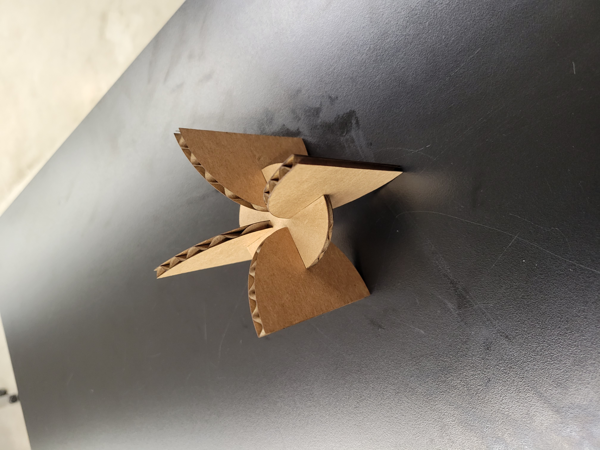
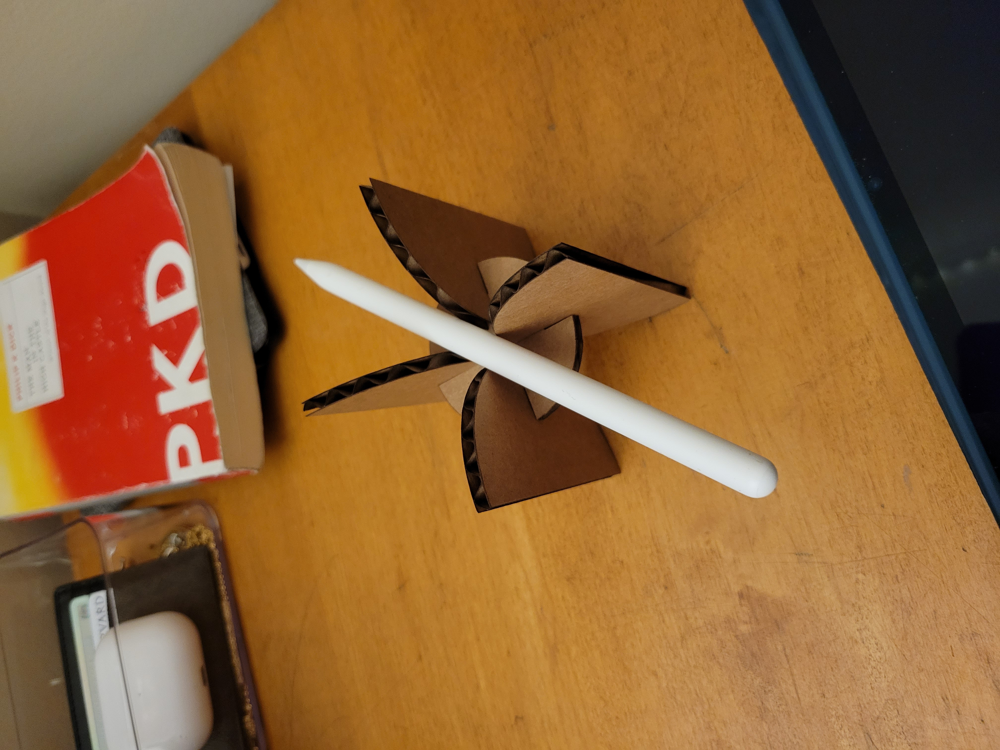
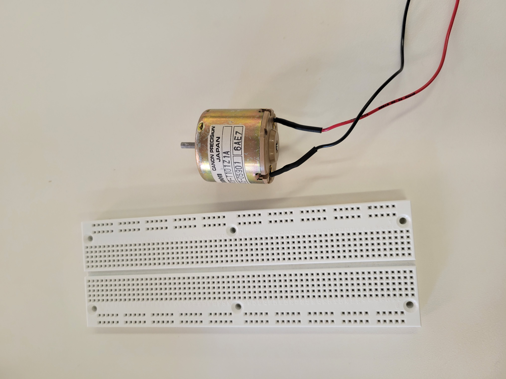

<div class="container-fluid">
### Week 2: 2D Design & Cutting
This week, we began using Fusion 360 and laser cutting to produce 2D designs, as well as learning how these 2D designs can fit together to create functional 3D forms and designs.
#### The Project
My project this week was a simple press-fit desk-toy that can stand up, sit on my desk, and hold stationery and other objects like pencils.
Such a toy would have to have legs to stand, and a central platform to accomplish two goals: tie the legs together and hold things.
I began by creating a circle with cutout notches. This would serve as my central platform that the legs would be built off of.
I set my kerf to 0.2 mm.

Initially, I had designed a stand that this central platform would rest upon, and then circular segments would extend from the sides. However, this stand would have precluded the central platform from fitting correctly.
My final design involved semicircular leg stands connecting to the circular platform and balancing it.
I first created this on Fusion 360, setting the notch widths to thickness plus kerf. I measured the thickness of my selected piece of cardboard using calipers.

After cutting the parts, the toy stands:

And also holds pencils:

In addition, I completed the provided Fusion360 tutorial on YouTube.
<a download href='./tutorial v6.f3d'>My F3D file can be found here. </a>
I also selected a DC motor and breadboard to measure using calipers and model in Fusion360.

The DC motor is composed of a cylinder (the main body) topped by a cylindrical shaft, and the breadboard is a rectangular prism.
The dimensions of the DC motor, as measured by the calipers are:
Main body diameter: 34.55 mm
Main body height: 31.55 mm
Shaft diameter: 2.99 mm
Shaft height: 9.98 mm
The dimensions of the breadboard are:
160.11 mm x 55.75 mm x 10.00 mm
<a download href='./assembly v4.f3d'>My F3D file can be found here. </a>